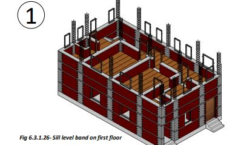
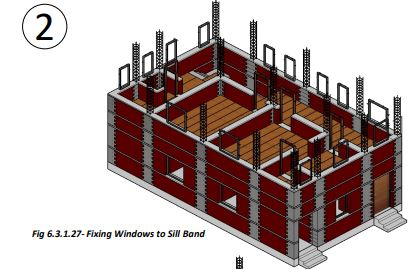
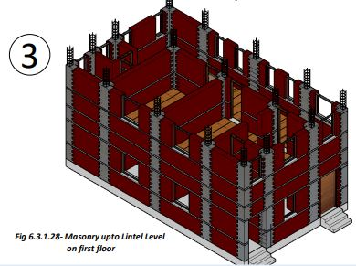
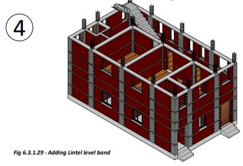

Wooden Roof
● If you so desire, we can make a wooden floor/roof of the ground floor by fixing 120x75 X 4mm size steel hollow box type rafters (A) on the walls and fix wooden planks (B) over the rafters to make the floor.
● The rafters shall be placed about 75 to 90 cm center to center on the RCC Bond Beams.
● Over the walls, the gaps between the rafters are filled with masonry to keep them in position.
● 40mm thick wooden planks (depending upon the quality of wood) shall be fixed over the rafters to make the floor.
● You can use timber rafters in place of steel box rafters if good timber rafters are available at a reasonable cost.




